An Unanticipated Pastime
When you live abroad life has a tendency to throw surreal moments your way. Moments of sudden awareness that you are really far away from where you started out. If you told me when I was a 12 year old kid growing up in rural Newfoundland that I would one day live in suburban Tokyo, and spend my weekends with old hobbyist bird photographers, I’d have laughed at you for so many reasons.
And yet, this is it. Life is weird.
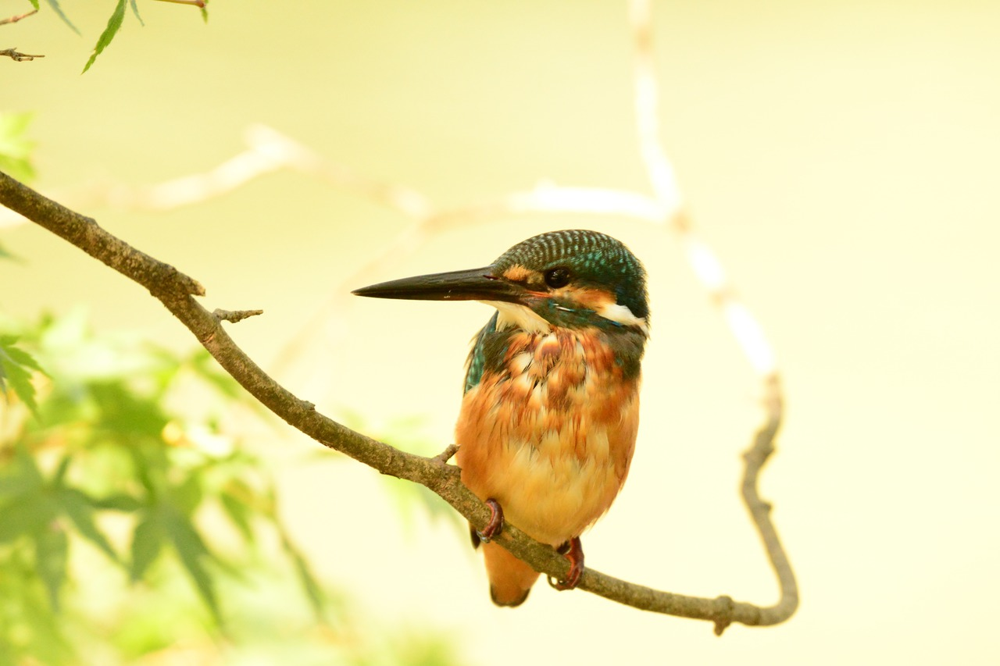
I consider photographing kingfishers to be part of my distributed retirement. When I first noticed these old (anywhere from age 50 to 85) Japanese bird photographers jaunting up and down a local riverside walkway lugging telezoom lenses in pursuit of tiny blue kingfishers, I thought to myself that it looked like a really great way to spend old age. And eventually as I got deeper into understanding the science of cameras (for my work at the time), I had sudden motivation to join their ranks sooner rather than later. I could certainly use the exercise and the Japanese language practice. And if I could take some bird pictures that might be neat too.
That was about three years ago. It’s funny how obsessions can grow from almost nothing.
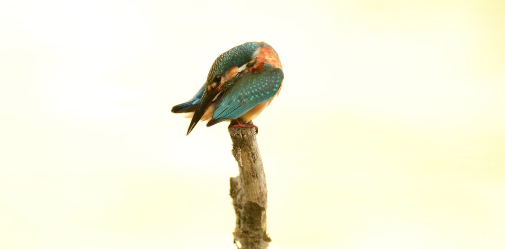
On the Attack
Kishfishers are fast. Like really fast. Verbs that typically apply to other stupid birds, like flutter or flitter, they just don’t apply to kingfishers. They stalk, they dart, they kill. If you’re lucky, a showy kingfisher might hover for you. After that they’ll dive underwater and return to their perch with lunch in the blink of an eye. Kawasemi, as they are called here in Japan, are every little fishy’s worst nightmare.

The bird scans the water, typically from a low-hanging branch, before diving violently into the river to end a fish’s being. As an optional part of this process, a kingfisher may or may not hover over the water’s surface for a while. Birds in flight are never easy to photograph, kingfishers especially. But when they hover, it gives you a short window of time to photograph them — a brief moment when they are completely still in mid-air and yet moving their wings at speeds our eyes can’t begin to comprehend.
At any other time when a kingfisher is in flight, a shutterspeed of anything less than 1/1600s is pretty much useless for freezing the action. But when they hover, you can experiment with slower speeds, as I did in the picture above where the blurred wings turned out all golden on a sunny spring day.
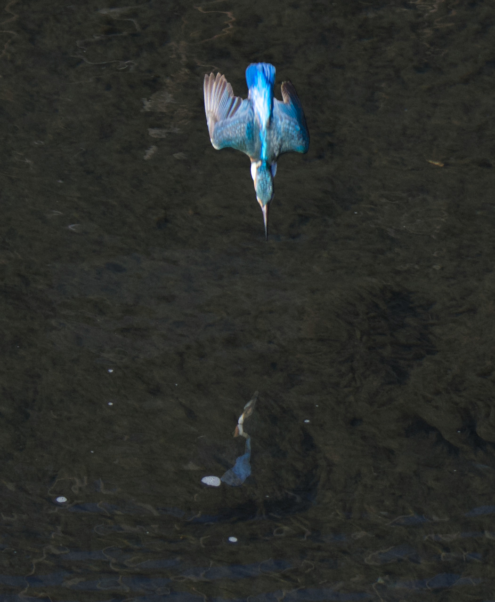

I’ve come to enjoy leisurely walks where I take photographs in an equally leisurely way. But there are times when I, like many of the other photographers, can’t help but try to capture the rare spectacle of a kingfisher diving and hunting.
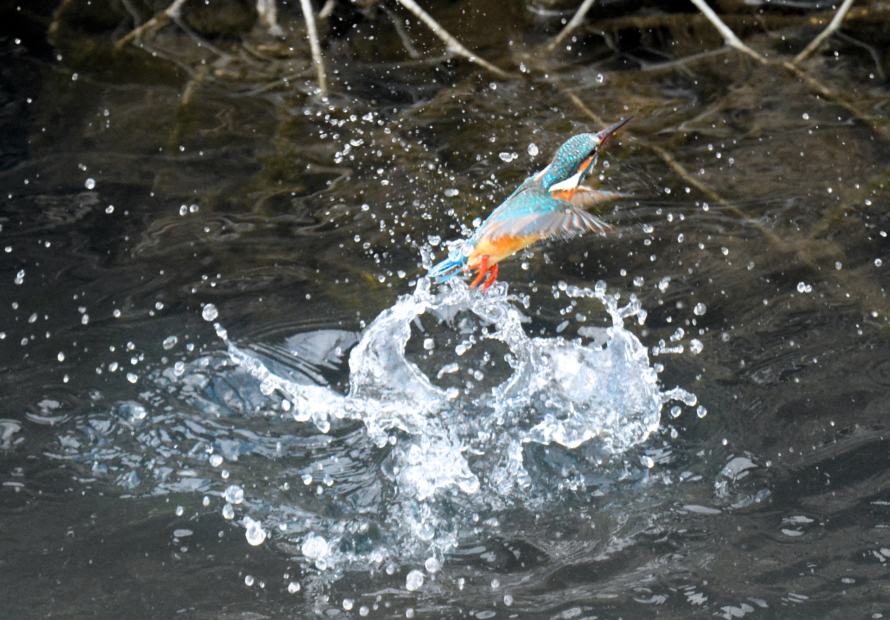
There’s some incredible naturally occuring geometry at work here, not only the the form of the kingfisher’s body and wings as they streamline to enter the water, but also as they unfold their wings upon entry to slow before snatching their prey.
I was lucky enough to catch the following shot, which almost looks like a butterfly or Rorschach test in its symmetry. The image quality isn’t as good as I’d like, but I love it nonetheless.
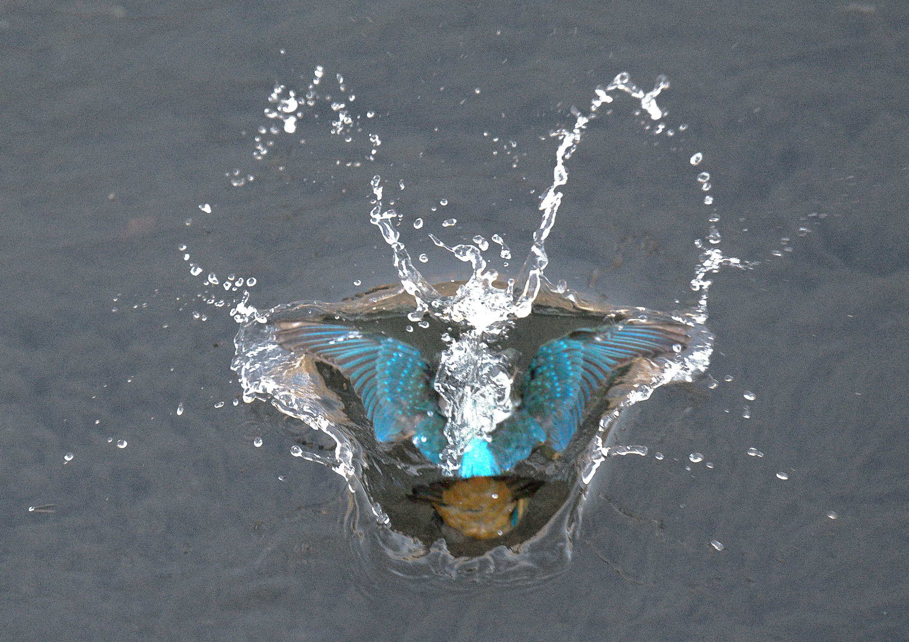
Of course, it’d be a shame for me to overlook the victims of this dramatic process. Typically they’re small minnows or crayfish, and watching kingfishers try to gulp them down can be somewhat entertaining too – especially if it’s a large catch.
The images below document the last moments of two unfortunate crayfish. The first one is my personal favorite, as you can practically see the “There go all my life plans” look on his little face.
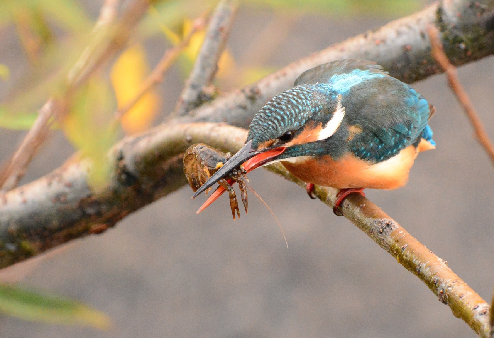
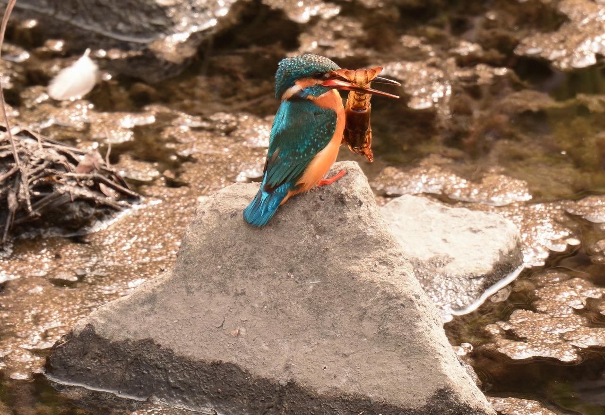
When mating season rolls around, you’ll sometimes see a romantic male bringing some fish to a waiting female as part of the courtship ritual (below). As a Newfoundlander I’ve heard of this practice, and legend has it that my father presented similar gifts of salt fish to my mom and her family just before I came along.
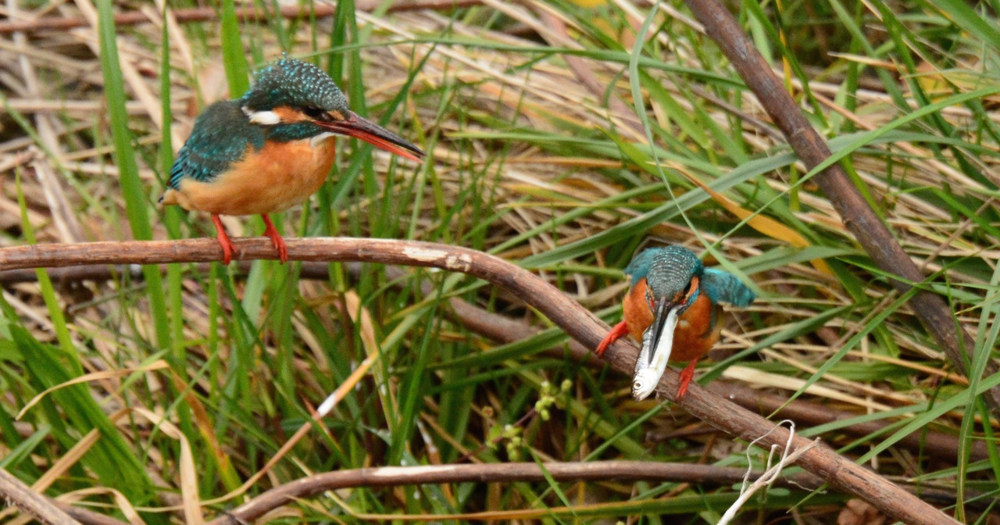
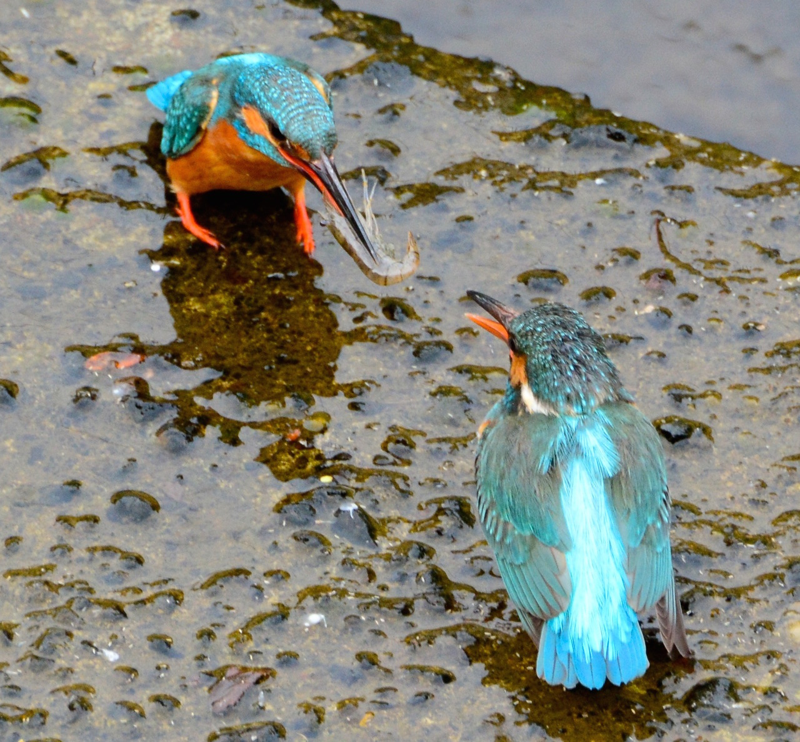
Kingfishers can even compensate for the refraction of the water’s surface when going after a fish. They have a retractable membrane over their their eyes for when they submerge, and you can often see this skin still deployed when a bird comes back and perches after a dive.
A kingfisher’s dive is a spectacle of fierce action and brilliant color, and from start to finish it’s just a few seconds. Some photographers, like Paul Sawer in the UK, will go so far as to set up a fish tank in a river as bait, attracting birds to a certain spot where they can be more easily photographed when they dive. Here in Japan, I don’t think I would be so intrusive in my approach, though it certainly sounds tempting. It’s an incredible sight. I’ve captured a few shots of attacking kingfishers, but I’ve yet to get a crisp, noiseless image that I’m completely satisfied with. I’m happy to share a few here on the web, but I’m always disappointed when I print them. In any case, I’m still having lots of fun. Incremental improvements. Baby steps.
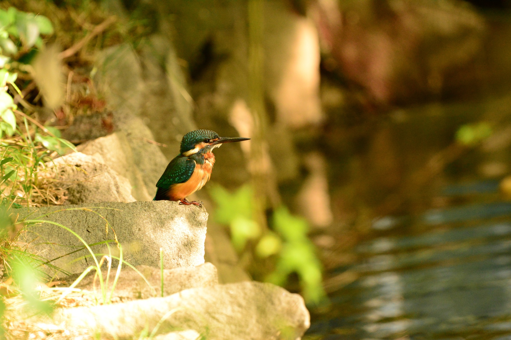
The image of a diving kingfisher is an inspiring one. Its streamlined shape was mimicked by designers of the Shinkansen bullet train design back in the 90s. Trains would often emit a loud boom when they emerged from tunnels, but JR’s Eiji Nakatsu – who was a hobbyist kingfisher photographer outside of work — thought the answer to the problem could be this little blue bird. Sure enough, by doing so the trains no longer emitted that boom after they adopted that design, and they also saved about 10 to 15% of their energy with this more aerodynamic shape.
In search of a style
When you shoot the same subject in the same environment for years, it’s a challenge keep the images fresh. For my first few years here, standing on the river’s edge shoulder-to-shoulder with other photographers raises the question, “How is my image different from what all these guys are shooting?” But I’ve found that by experimenting with sunlight and shade and different exposures, sometimes even counter-intuitively shooting into the sun on a bright morning, I can create some fun effects. Many of the images I’ve presented on this page have a warm feeling, with a blown-out background, and I’m really enjoying experimenting with this technique.
And this spring, as last spring, myself and my aged associates held a photo exhibition in a local park to show off our work under the cherry blossoms. For the first time I felt I have a strong batch of photos to put forth – and by “put forth,” I mean hang in clear vinyl cases on a chain link fence for passers-by to peruse. The venue is admittedly crude, but the pictures these guys shoot are insanely good. Many of those photos that I exhibited are here in this article, and I hope you’ve enjoyed them. I still have lots to learn, and I’m enjoying that process.
~~END~~
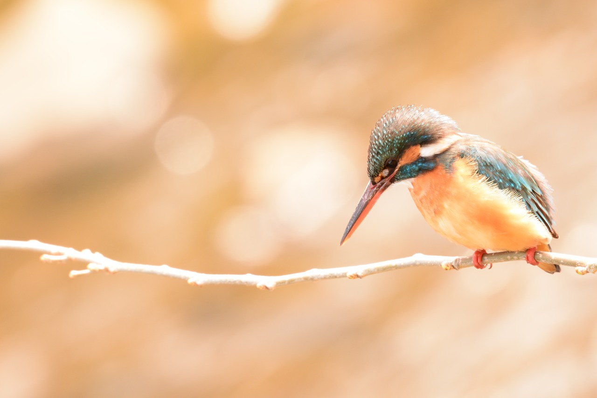
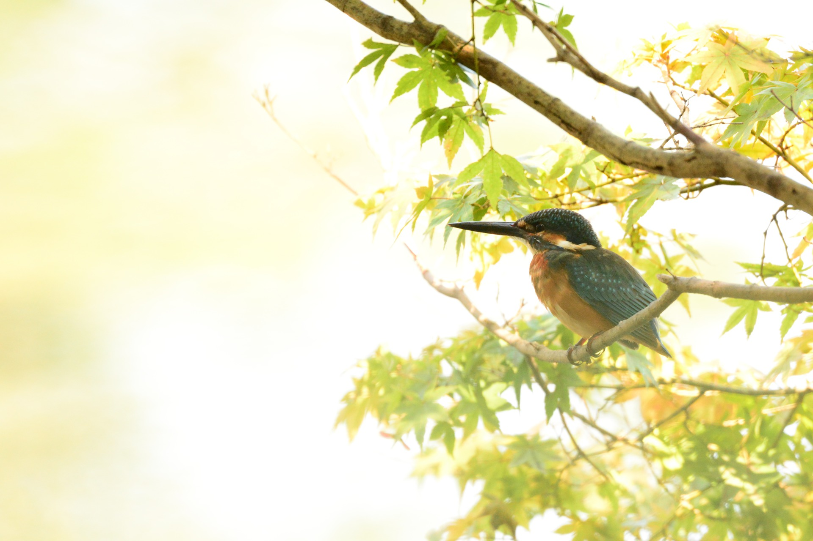
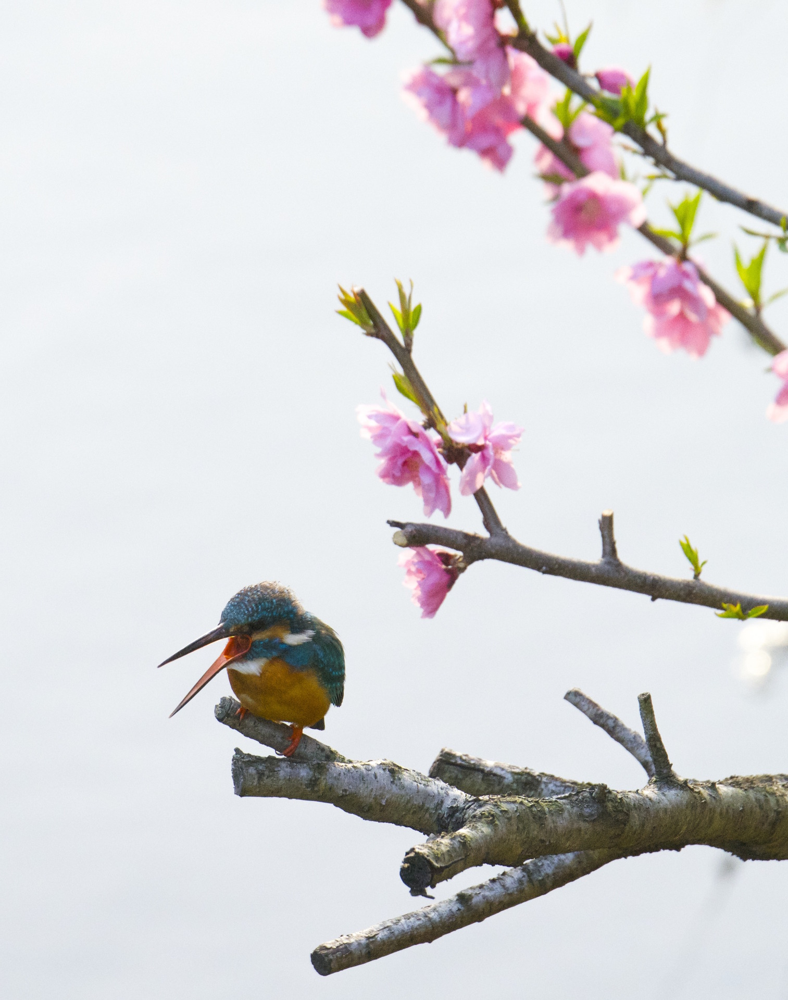